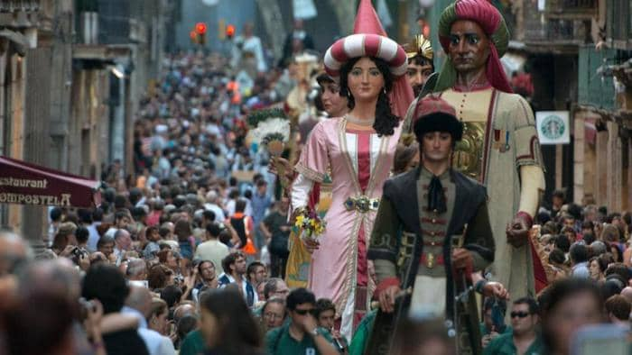

Surgimento de Culturas
A formação de uma cultura é um processo que pode levar décadas, séculos e até milênios, envolvendo diversos tipos de relações entre um ou mais grupos humanos.
Como exemplo do desenvolvimento cultural, podemos citar a Espanha, a qual foi marcada pela união de diversas culturas de antigos povos da região por meio de casamentos arranjados. Devido à essas diferenças culturais entre os antigos povos, que prevalecem até os dias de hoje, o país passa por vários movimentos separatistas, como a região da Catalunha, a qual possui uma cultura independente da espanhola, apresentando uma língua e costumes próprios. Atualmente na região, houve um aumento do sentimento separatista entre os cidadãos.
Partindo para as principais questões do problema e usando os fatos apurados anteriormente: O que é cultura? Como fatores internos e externos podem influenciá-la? Será isso o que refletiremos e apresentaremos a partir de agora.
O que é cultura?
A cultura é entendida como um conjunto de práticas, objetos, relações, valores e costumes que caracterizam determinadas sociedades ou grupos sociais. A cultura está presente nos mais diversos espectros da vida em sociedade e molda, por meio das instituições e das relações que estabelece, o modo como enxergamos o mundo.
De acordo com o Brasil Escola, cultura seria um “modelo” em que a sociedade , por meio de convenções sociais, cria identificação e empatia entre indivíduos de um mesmo grupo. Já para Raymond Williams, cultura é holística e dinâmica, acima de tudo uma 'forma total de vida' que não pode ser reduzida a artefatos concretos ou textos canônicos
De forma geral, cultura é formada , além do compartilhamento de história, linguagem, tradições e crenças; das ações do cotidiano que criam um senso de empatia entre um grupo.
Culturas e suas diversas faces
Desde a antiguidade, as sociedades se dividiram por diversos fatores, como: Força, propriedades, riquezas e etc. Isso nos leva a pensar, como essas diferenças podem afetar as vertentes culturais de uma sociedade?
Por muitos séculos, as grandes sociedades se organizavam de forma oligárquica, onde poucos detinham grande influência, acarretando na diferença da formação e desenvolvimento cultural das classes .Nos dias atuais, podemos ainda ver que há uma divisão no estilo de vida dentro de uma mesma sociedade, pois ainda há o conceito de superioridade entre culturas, como exemplo a música:
Em que, na concepção de muitos, o funk é um estilo musical marginalizado, devido a sua origem e “representação” por pessoas que não conhecem o gênero; Porém ele representa a luta dos menos favorecidos por igualdade e representação em todos os âmbitos da sociedade. Enquanto a música clássica é considerada superior por representar a supremacia européia, branca e rica, e por carregar seu passado aristocrático.

Cultura e globalização
Como notamos anteriormente, a cultura é o conjunto de hábitos, práticas e produtos realizados por uma sociedade. Com isso em mente, podemos nos perguntar: Como a globalização, principalmente com a internet, pode transformar a cultura de uma sociedade?
Com a globalização, o mundo como um todo passou por uma drástica mudança, a possibilidade de comunicação rápida e fácil entre povos de diferentes partes do globo, possibilitou a disseminação de suas culturas, práticas e hábitos para outras sociedades, levando à incorporação e adaptação de diversas culturas, e com o surgimento da internet, isto se tornou ainda mais acessível e recorrente, possibilitando um maior acesso a cultura e informações.
No entanto, observa-se também que esse processo não se dissemina de forma igualitária, de modo que alguns centros economicamente dominantes transmitem em maior número os seus elementos culturais.
Por esse motivo, muito se fala em uma homogeneização das culturas, isto é, a padronização dos modos de ser e agir dos indivíduos com base em uma referência dominante, fazendo sucumbir os valores locais e tradicionais. Nesse sentido, muitos acusam o processo de globalização de ser um sistema perverso, uma vez que ele não se democratiza inteiramente e só atinge os setores economicamente dominantes do mundo e das sociedades.
Por outro lado, à medida que os sistemas de comunicação, informação e transporte vão elevando a sua capacidade de disseminação, observamos também a possibilidade dos costumes e valores locais se sobreporem aos elementos globais. Isso ocorre a partir do momento em que comunidades tradicionais ou culturas regionais conseguem disseminar e divulgar, para além de suas fronteiras, as suas características. Com base nessas concepções, há quem diga que a Globalização, na verdade, promove uma heterogeneização cultural.
Em resumo, a globalização, impulsionada pela internet, tem um impacto profundo na cultura, com potencial tanto para homogeneização quanto para enriquecimento cultural. O desafio está em encontrar um caminho que promova a diversidade, o acesso igualitário e o diálogo entre culturas.